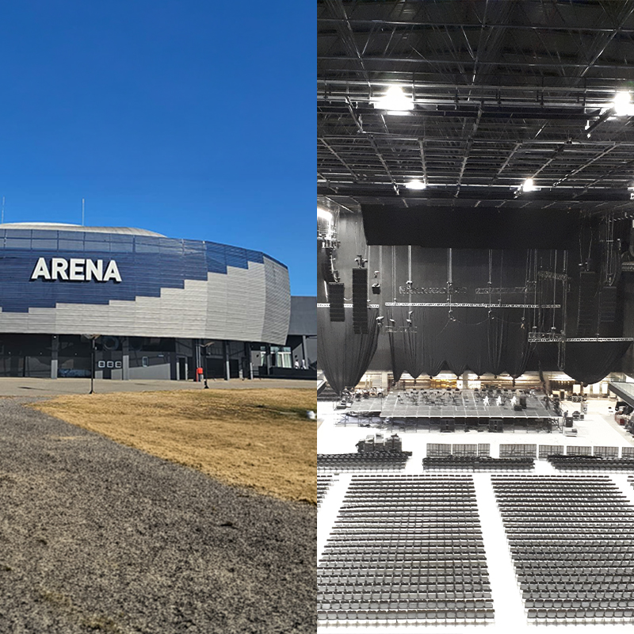
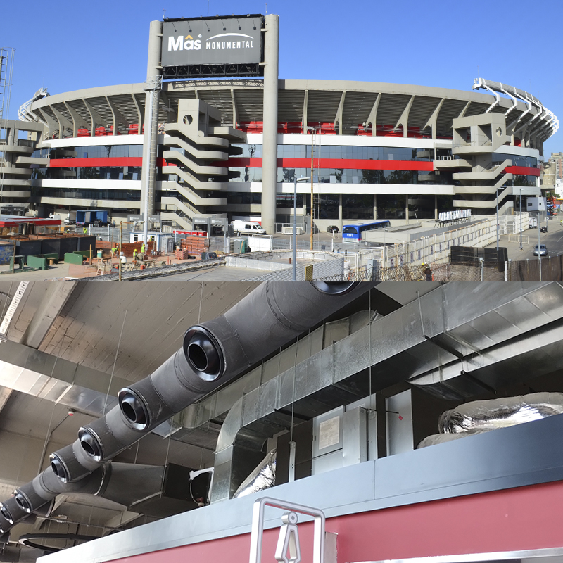

Obras
Shoppings y Estadios
.jpg)
Unicenter Shopping
Comercial
Implementación de sistemas termomecánicos en uno de los centros comerciales más importantes del país. Se ejecutó una planta de refrigeración de 2.000 T.R., asegurando eficiencia en grandes superficies.

Shopping Bahía Blanca
Comercial
Desarrollo de instalaciones de climatización para espacios comerciales de gran escala. Se implementó una planta de refrigeración de 800 T.R., optimizada para altos volúmenes de público.

Buenos Aires Arena
Estadio
La instalación termomecánica central de A.A., calefacción y ventilación mecánica, se logra con una Planta Térmica de Refrigeración/Calefacción compuesta de 1 máquina enfriadora de agua con compresor a tornillo, frío-calor, y otras 2 similares, frío solo. Total instalado para agua fría: 950 TR, con más 220 TR en VRV. Se instalaron 26 UTAs, provistas de un sistema economizador de energía (Free Cooling)

River Plate Monumental
Estadio
Instalación termomecánica VRV con Heat Pump - Marca DAIKIN - 640 TR.